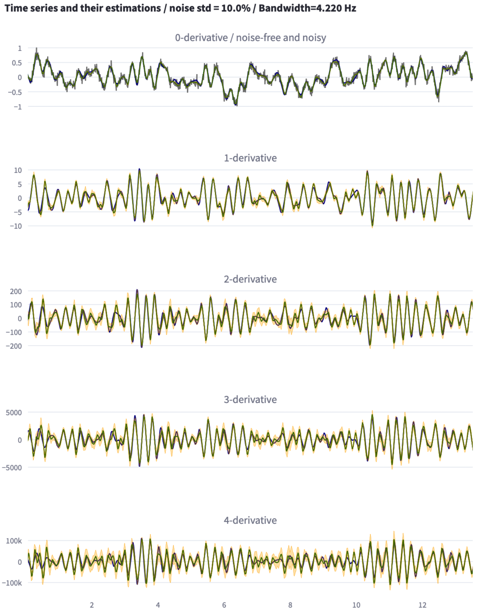

ML_derivatives
A module to compute high derivatives of noisy time-series.
Signal preocessing, derivatives estimation, denoising, Machine Learning, Python
ml_derivatives is a python module for the computation of high order derivatives (up to order 4 in the current implementation) despite relative noise to signal noise that might be as big as 7% or even 10%.
Two appealing features of the modules are:
Automatic tuning:
The
ml_derviativesmodule enables an automatic tuning of the trade-off involving the bandwidth of the time-series and the level of noise affecting the measurements. While handling this trade-of is the major issue in derivating noisy signal, this feature seems to be absent from the currently available alternatives which always come with tuning parameters that are left to the user.Computation of confidence intervals:
the
ml_derviativesmodule provides (optionally) an estimation of an interval of confidence to which belong the true values of the derivatives with high probabiliy. This might be of great value when the estimated derivatives are extracted to build a model involving the high derivatives. Indeed, regions where the confidence interval is large might be de-selected in order to be excluded from the so-called training dataset.

For a complete description of the algorithm, see the reference paper cited below
Here, Only the main elements are briefly explained for an easy and quick use of the module.
Installation
The package will be made available soon through the standard installation script1:
pip install ml_derivativesProblem statement
Given a sequence yn of N values representing successive noisy measurements of of a physical signal ywhich is acquired using fixed acquisition period dt over the time interval \(I\). We want to compute an estimation of the d-th derivative of the underlying signal over the same time interval through a python call of the following form:
\[ \dfrac{d^d}{dt^d}\Bigl[y\Bigr]\Biggl\vert_I = \texttt{estimate\_derivative(yn, dt, d, ...)} \tag{1}\]
In the current implementation, \(d\in \{0,1,2,3,4\}\). The case with \(d=0\) corresponds to a denoising task (filtering).
Generating time-series with exact high derivatives
In order to start getting hands-on the main call that addresses the above described problem, the ml_derivatives provides a handy function that enables to generate a time series with prescribed bandwidth, length and sampling period, so that one can start testing the performance of the derivatives estimator.
If you already have your time-series, this step would be unnecessary although it is always advisable to use this facility to get checkable results before being confident with the module. Indeed, having your own noisy signal, it is generally difficult to get the ground truth regarding the higher dervatives of the time-series.
This is done using the method generate_time_series of the Derivator class of the module as shown in the python script below.
import numpy as np
from ml_derivatives.mld import Derivator
nt = 5001 # The length of the time series to generate
omega = 5.0 # Its bandwidth
dt = 0.02 # The sampling acquisition period
# Create an instance of the main Derivator class
der = Derivator()
# Generate a signal with a prescribed set of attributes
t, Y = der.generate_a_time_series(nt, omega, dt)
# Add the desired amount of noise to the signal.
noise_level = 0.05
yn = noise_level * np.random.randn(len(Y[0])) + Y[0]Notice that the outputs of the generate_time_series method of the Derivatorclass are the time vector t and a list Y of five time-series representing the successive derivatives of the signal. More precisely:
Y[0]is the noise free signal to which the noise is to be added. Notice that this time series is always normalized so that its maximum value is lower than 1.0.Y[i]fori=1,2,3,4is the corresponding exact i-th derivative of the signal.
Notice that these derivatives have to be estimated from the noisy version of the signal, namely yn that is computed in the last line of the above script.
Notice how we separate the generation of the noise-free time-series from the process of adding noise. This enables to check several noise levels for the same time-series. This is because there is a randomness character inside the generate_time_series method of the Derivator class.
The plotting python code and the resulting time series are shown in the following tabs.
import plotly.graph_objects as go
from plotly.subplots import make_subplots
# prepare the plot
fig = make_subplots(
rows=5,
cols=1,
subplot_titles=([f"{i}-order derivatives" for i in range(5)]),
)
# iterate over the derivatives and plot the time-series
for i in range(5):
if i == 0:
fig.add_trace(go.Scatter(x=t, y=yn, mode='lines',
line=dict(color='Black'),
opacity=0.8), row=i+1, col=1)
fig.add_trace(go.Scatter(x=t, y=Y[i]), row=i+1, col=1)
# unify the x-axis zoom and set the sizes
fig.update_layout(
showlegend=False,
width=800,
height=1200,
xaxis2=dict(matches='x'),
xaxis3=dict(matches='x'),
xaxis4=dict(matches='x'),
xaxis5=dict(matches='x')
)Notice that the first subplot shows both the noise-free and the noisy version of the time-series to be differentiated. (The plots are zoomable).
Computing the derivatives via the derivate method
The main method that is exported by the ml_derivatives module is the derivate that is described in the present section.
Input arguments
The table below describes the input arguments of the derivate method.
| Parameter | Description | Default |
|---|---|---|
y |
The noisy time-series to be differentitated to the order d. This should be a numpy array. |
– |
d |
Integer inside [0,1,2,3,4] representing the derivation order to be computed. Notice that the method for computing the derivation order d is not based on the computation of the lower order derivatives. |
– |
dt |
The sampling acquisition period that should be a float scalar number. |
– |
fit_before |
A boolean option instructing the algorithm to first evaluate the bandwidth of the time-series y or not before computing the derivatives. Upon the first call, the fit is necessarily done. For the next evaluation, the option is made available and set to False by default for computational efficiency reasons. The rationale is to avoid the bandwidth evaluation if the user thinks that the outcome of the first evaluation is still relevant. Swith it to Trueonly if changes in the bandwidth is expected compared to the previous fit. |
False |
assess |
A boolean option. When True a computation of statistics of error on the \(0\)-th derivatives is done and based on which if the force_level option is set to true, the closest level of noise among those for which models are available is computed and used in the derivative estimation. Otherwise the noise level 0.05is used by default. |
False |
force_level |
A boolean instructing the algorithm to look for the appropriate noise-level’s model to be used in the estimation of the derivative when set to True. Otherwise the noise level 0.05is used by default. This option is relevant only if the previous assess option is set to True. |
False |
mute_warnings |
A boolean option which, when set to True, Suppresses the printing of some warning messages that are not necessarily useful in production although they can be informative in the preparation phase. |
True |
Output arguments
The derivate method of the ml_derivatives module returns a tuple, say output with the following meanings
| parameters | Description |
|---|---|
output[0] |
The estimated derivatives of order d where d is the derivation order used in the call of the method. |
output[1] |
The sequence of confidence interval associated to the estimation. |
output[2] |
A dictionary representing the statistics of errors on the \(0\)-derivative estimation. This is produced only if the assess input argument is set to Trueotherwise output[2]=None is returned. |
Examples of use
Use the derivatives estimator
The following script uses the previously generated time-series, add several levels of noise \(\in \{0.02, 0.04, 0.05, 0.07\}\) and for each resulting noisy time-series, computes the fives derivatives (\(d=0,1,2,3,4\)) and create the associated plotly figures.
for noise in [0.02, 0.04, 0.05, 0.07]:
yn = noise * np.random.randn(len(Y[0])) + Y[0]
fig = make_subplots(rows=5, cols=1,
subplot_titles=(f'true and noisy signal / noise={noise}',
f'True vs estimated {1}-derivative',
f'True vs estimated {2}-derivative',
f'True vs estimated {3}-derivative',
f'True vs estimated {4}-derivative'),
shared_xaxes=True)
fig.add_trace(go.Scatter(x=t, y=Y[0], name=f'True y'), row=1, col=1)
fig.add_trace(go.Scatter(x=t, y=yn, name=f'noisy yn'), row=1, col=1)
for d in range(5):
yhat, e_std, log = der.derivate(y=yn, d=d, dt=dt)
#--
fig.add_trace(go.Scatter(x=t, y=Y[d], name=f'True {d}-derivative',
line=dict(color='Black')), row=d+1, col=1)
fig.add_trace(go.Scatter(x=t, y=yhat, name=f'estimated {d}-derivative',
line=dict(color='Blue')), row=d+1, col=1)
fig.update_layout(
width = 800,
height=1200,
showlegend=False
)
fig.write_html(f'example_{int(100 * noise)}.html')The resulting plots are shown in the tabls below:
Use the confidence intervals provided
The confidence interval is to be used as if was an indication avout the standard deviation that is defined point-wise along the time interval over which the estimation of the derivative is conducted. Based on this, it is common to use as confidence intervals around the estimation that show a width of mutiples of the standard deviation. This takes the following form:
\[ [y_\text{prediced}-\rho\sigma, y_\text{prediced}+\rho\sigma]\quad \rho=1,2,3 \tag{2}\]
The following script shows how the estimation of \(\sigma\) can be used and computes for a noisy signal the probability of the true value being inside the above defined interval for different values of \(\rho\in \{1,2,3\}\). The thrid derivatice is used for the sake of illustration together with a noise level of 0.05.
noise = 0.05
d = 3
yn = noise * np.random.randn(len(Y[0])) + Y[0]
yhat, sigma, _ = der.derivate(y=yn, d=d, dt=dt, assess=True, force_level=True)
dic_confidence = {}
for rho in [1,2,3]:
cond1 = Y[d] <= yhat + rho * sigma
cond2 = Y[d] >= yhat - rho * sigma
dic_confidence[rho] = int(np.sum(cond1 & cond2)/len(yhat) * 100)
import pandas as pd
df_confidence = pd.DataFrame(dic_confidence, index=['Probability'])
df_confidence.columns = [f'rho={i+1}' for i in range(3)]
print("--------------------------------------------------------------")
print("-- Probability of being inside [-rho * sigma, +rho * sigma] --")
print("--------------------------------------------------------------")
print(df_confidence)
print("--------------------------------------------------------------")which produces the following result:
which means for instance that more than 98% of the instants, the true values of the third derivatives lies inside the \(2\sigma\)-defined confidence interval.
Limitations
N=50 points required.
As the derivatives estimator involves an estimation of the bandwidth of the signal and since the precision of this estimation is inversly proportional to the number of points, the current implementation of the module required a minimum number od points N=50.
dt.
Obviously, given the acquisition period dt, there is a limitation on the bandwidth of the signal for which derivatives can be computed. For this reason, it is not advisable to attempt estimation beyond the following maximum pulsation: \[
\omega_\text{max}= \dfrac{2\pi}{5\times \texttt{dt}}
\]
ml_derivatives is slower than standard filters although incomparatively more precise
It is important to underline that the counterpart of the above nice features is that the processing time is not that of a point-wise filter although computation time remains descently small. See below for more details regarding standard compuation times using the ml_derivatives module.
Since the estimation is based on some stored information, for the sake of memory, the length of the sequence yn used as input argument in (Equation 1) is limited to 10000. If estimation of derivatives for longer sequence is required, please decompose the signal into multiple segments.
Citing ml_derivatives
@misc{alamir2025reconstructinghighderivativesnoisy,
title={On reconstructing high derivatives of noisy time-series with confidence intervals},
author={Mazen Alamir},
year={2025},
eprint={2503.05222},
archivePrefix={arXiv},
primaryClass={eess.SY},
url={https://arxiv.org/abs/2503.05222},
}The above reference contains a detailed description of the algorithm together with an extensive comparison with the best available alternatives. It also explain the general targeted scope of the module that mainly focus on extracting high derivatives from noisy time-series in the aim of building learning datasets that contains virtual sensor-like columns representing derivatives of different orders of the raw columned coming from the ground measurements.
Footnotes
Should be available in May 2025.↩︎